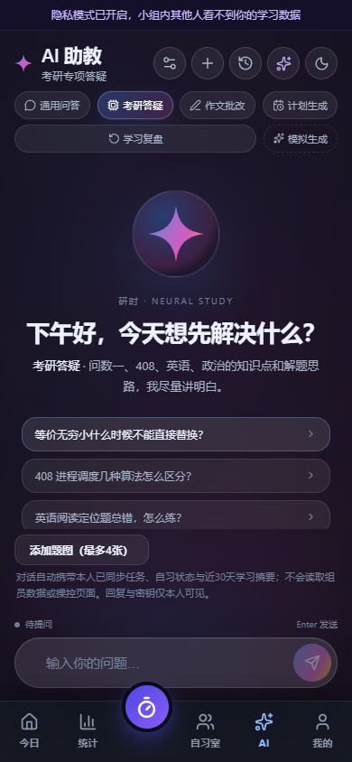
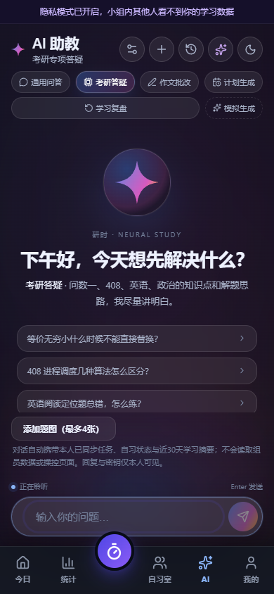
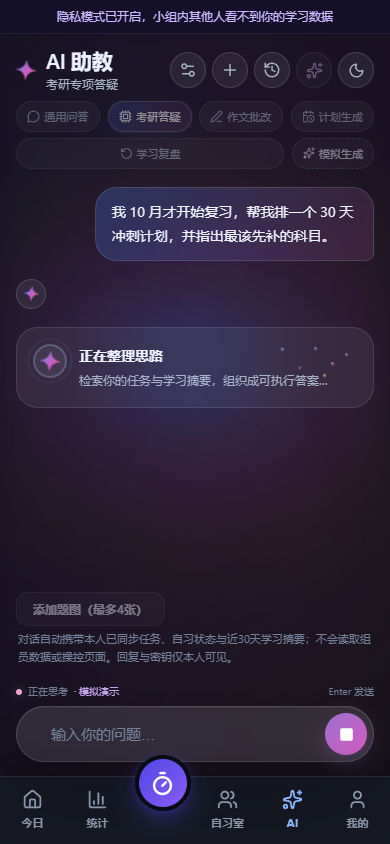
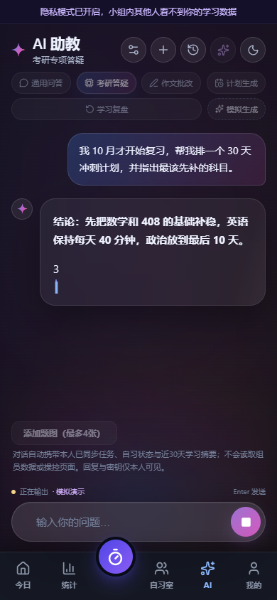
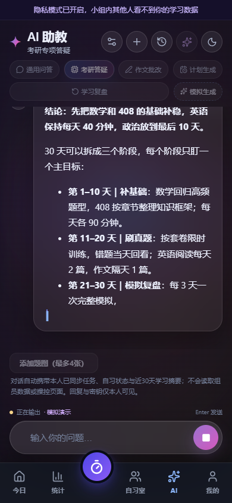
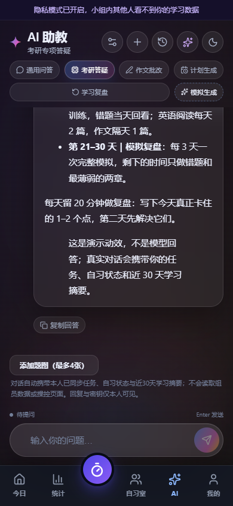
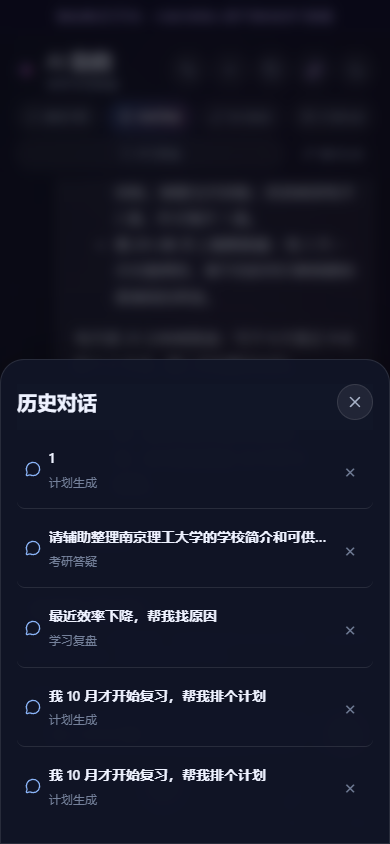
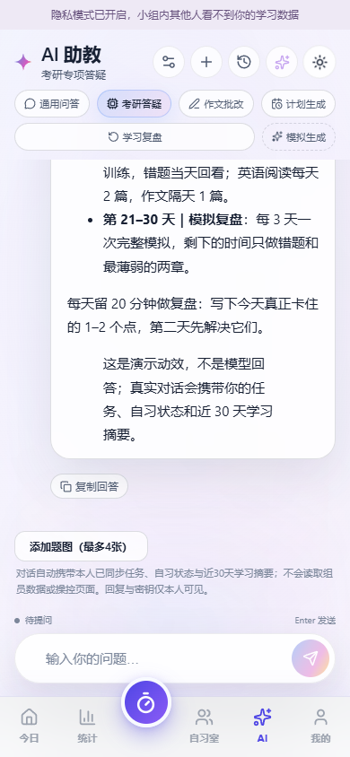
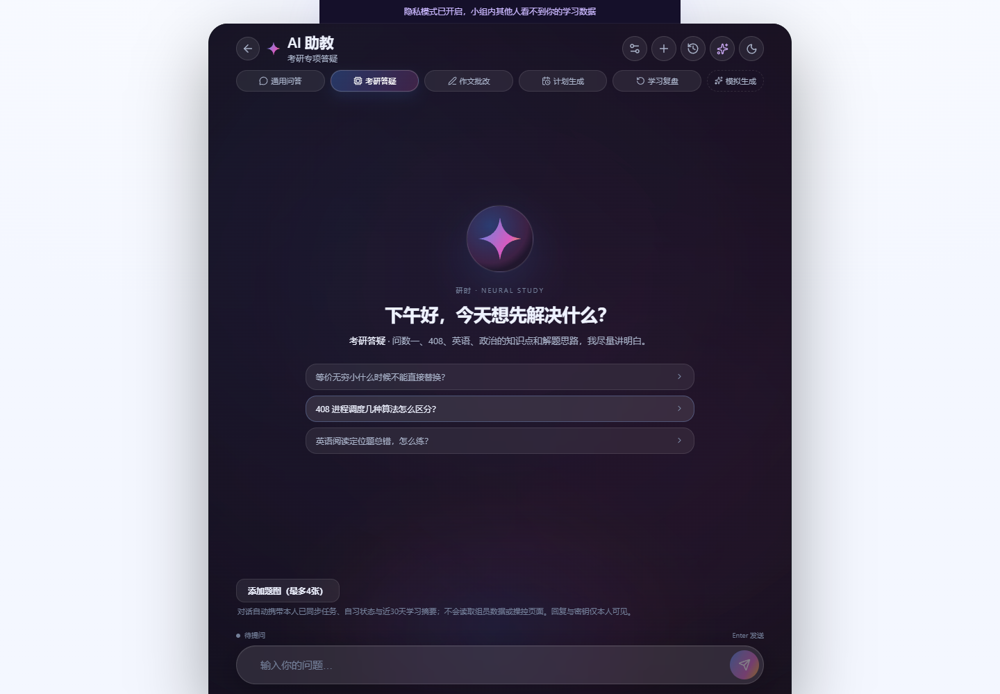

01 · idle 深色空态
四星芒 + 问候语 + 编辑式起步问题；输入框常驻底部；底部导航同步为深色。
四星芒 + 问候语 + 编辑式起步问题；输入框常驻底部；底部导航同步为深色。

02 · listening
输入框聚焦：光谱指针移到胶囊输入框，状态点与文案切换为“正在聆听”。
输入框聚焦：光谱指针移到胶囊输入框，状态点与文案切换为“正在聆听”。

03 · thinking
四星芒呼吸、径向涟漪与 6 个柔和粒子；用户问题保留，回答尚未出现。
四星芒呼吸、径向涟漪与 6 个柔和粒子；用户问题保留，回答尚未出现。

04 · delivering 起点
关键结论置顶，词级 ombre 渐变；文本逐段流出，末尾有光谱光标。
关键结论置顶，词级 ombre 渐变；文本逐段流出，末尾有光谱光标。

05 · delivering 中段
回答卡保持磨砂玻璃质感，列表、时间线式分段向下展开；发送键变为停止。
回答卡保持磨砂玻璃质感，列表、时间线式分段向下展开；发送键变为停止。

06 · 回答完成
编辑式卡片收束，附复制回答、题图入口与状态回到“待提问”。
编辑式卡片收束，附复制回答、题图入口与状态回到“待提问”。

07 · 深色历史弹层
半透明磨砂面板、标题栏与关闭按钮；弹层覆盖底部导航。
半透明磨砂面板、标题栏与关闭按钮；弹层覆盖底部导航。

08 · 浅色变量
同一套状态与结构切换为浅色变量：深色文字、浅色玻璃、弱化的光谱。
同一套状态与结构切换为浅色变量：深色文字、浅色玻璃、弱化的光谱。

09 · 桌面端
840px 居中面板、760px 编辑列、返回今日入口；桌面端由 AI 面板覆盖底部导航。
840px 居中面板、760px 编辑列、返回今日入口；桌面端由 AI 面板覆盖底部导航。